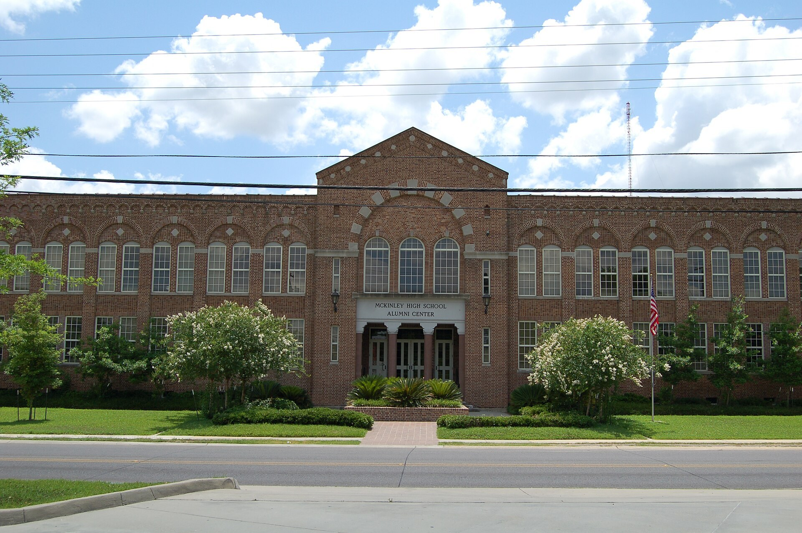

Школьная система США (K-12): основы для семей иммигрантов
В США государственное образование для детей обычно называют «K-12» — от детского сада (kindergarten) до 12-го класса. Государственные школы бесплатны и открыты независимо от иммиграционного статуса ребёнка или родителей. Ниже по официальным источникам объясняется, как устроена система, как записать ребёнка, какая есть языковая поддержка и программы бесплатных обедов.

Для семей, переехавших в США, один из важнейших вопросов — как устроить ребёнка в школу. В США государственные школы бесплатны и открыты для каждого ребёнка. Ниже — как устроена школьная система, обязательный школьный возраст, порядок записи, помощь для детей, не говорящих по-английски, и программы бесплатных обедов — изложено только по официальным и широко признанным источникам.
Как устроена система
Школьное образование в США называют «K-12»: оно начинается с детского сада (kindergarten, обычно в 5 лет) и идёт с 1-го по 12-й класс. Обычно оно делится на три ступени: начальная школа (elementary, примерно 1–5 классы), средняя ступень (middle school или junior high, примерно 6–8 классы) и старшая школа (high school, 9–12 классы). Окончивший 12-й класс получает аттестат (high school diploma). Система не федеральная, а управляется в основном штатами и местными школьными округами, поэтому детали различаются от штата к штату.
Обязательный школьный возраст
В каждом штате США есть закон об обязательном образовании. Обязательный возраст различается по штатам — обычно ребёнок должен пойти в школу в 5 или 6 лет и оставаться в школе до 16, 17 или 18 лет. Точный возраст устанавливает штат, где живёт семья.
Каждый ребёнок имеет право учиться
Согласно решению Верховного суда США по делу «Plyler v. Doe» (15 июня 1982 года), штаты не вправе лишать ребёнка бесплатного государственного образования из-за иммиграционного статуса. Государственные начальные и средние школы не могут отказать в приёме ребёнка из-за гражданства или иммиграционного статуса ребёнка либо родителей. Школа не вправе требовать подтверждения иммиграционного статуса для записи.
Типы школ
Основные типы школ в США: государственные (public) — бесплатные, финансируются за счёт налогов; чартерные (charter) — бесплатные школы на государственные средства, но с независимым управлением; магнитные (magnet) — государственные школы с углублённой специализацией; и частные (private) — платные, часто религиозные или независимые. Большинство семей записывают ребёнка в государственную школу по месту жительства.
Как записать ребёнка
Для записи ребёнка обычно запрашивают такие документы: подтверждение возраста ребёнка (свидетельство о рождении или паспорт), подтверждение места жительства (договор аренды или счёт за коммунальные услуги) и записи о прививках (immunization). Школа не может сделать иммиграционный статус или номер социального страхования (SSN) условием записи. Если документы из другой страны, школа или округ оценивают их.
Помощь детям, не говорящим по-английски
Для учеников, чей родной язык не английский, в государственных школах есть специальные языковые программы — часто называемые ELL (English Language Learner) или ESL (English as a Second Language). Школы обязаны оказывать таким ученикам дополнительную языковую поддержку, чтобы они понимали уроки и осваивали другие предметы.
Бесплатные и льготные обеды
По Национальной программе школьных обедов (National School Lunch Program) дети из малообеспеченных семей получают в школе бесплатный или льготный обед. В зависимости от дохода семьи и числа её членов ребёнок может иметь право на бесплатный или льготный обед; для этого обычно заполняют заявление, которое выдаёт школа.
Как финансируются школы
Государственные школы финансируются в основном из трёх источников: местные налоги (часто налог на недвижимость — property tax), бюджет штата и федеральные средства. Поэтому ресурсы каждого школьного округа зависят от местной налоговой базы, и качество школ может различаться от района к району. Для родителей само образование бесплатно.